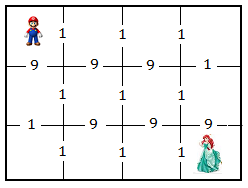

Mụ phù thủy có một khu hầm hình chữ nhật gồm n x m căn hầm. Các căn hầm được đánh số từ dòng từ 1 đến n theo chiều từ trên xuống dưới, đánh số cột từ 1 đến m theo chiều từ trái qua phải. Giữa hai căn hầm sát nhau có cửa thông nhau mà phải mất một khoảng thời gian nào đó mới có thể mở cửa để đi từ căn hầm này sang căn hầm kia. Sau khi bắt cóc công chúa, mụ phù thủy giam nàng tại căn hầm cuối cùng [n,m] - dòng n cột m . Chàng thợ sửa ống nước Super Mario đang ở căn hầm đầu tiên [1, 1]. Bạn hãy tìm các căn hầm mà Mario phải đi qua để giải cứu công chúa một cách nhanh nhất.

Dữ liệu nhập: gồm các dòng sau:
- Dòng thứ nhất là hai số nguyên n và m cách nhau một khoảng trắng (1 ≤ n, m ≤ 10).
- Trong n dòng tiếp theo mỗi dòng gồm m-1 số nguyên aij là khoảng thời gian để mở cửa từ căn hầm [i, j] sang căn hầm [i, j+1]. (1 ≤ aij ≤ 105)
- Trong n-1 dòng tiếp theo mỗi dòng gồm m số nguyên bij là khoảng thời gian để mở cửa từ căn hầm [i, j] sang căn hầm [i +1, j]. (1 ≤ bij ≤ 105)
Dữ liệu xuất:
- Là số nguyên xác định khoảng thời gian sớm nhất mà Mario giải cứu công chúa.
_